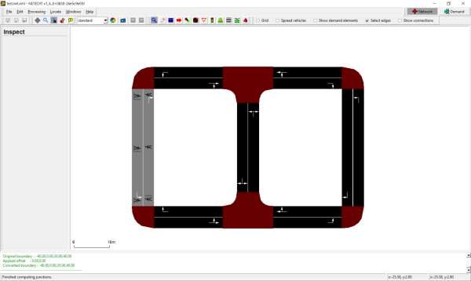
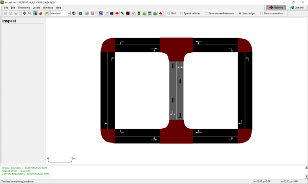
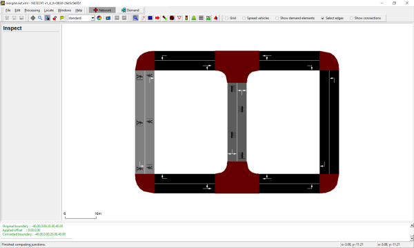

netdiff.py#
This script compares two .net.xml files. The call
<SUMO_HOME>/tools/net/netdiff.py A.net.xml B.net.xml diff
will produce 4 plain-XML network files
- diff.nod.xml
- diff.edg.xml
- diff.con.xml
- diff.tll.xml
These files contain groups of xml elemens (i.e. nodes) that have been delete, created or modified and can be used to investigate differences between the two networks A and B. Furthermore these files be used to maintain change-sets for making repeatable modifications:
netconvert --sumo-net-file A.net.xml -n diff.nod.xml -e diff.edg.xml -x diff.con.xml -i diff.tll.xml -o B.net.xml
The above call can be used to recreate network B based on A and the recorded change-set. Note, that for any modified elements (i.e. modified speed limit for an edge) the file diff.edg.xml only contains to modified attributes.
A typical use case for netdiff.py is this:
- Import a network from OSM (call this A.net.xml)
- make some modifications with NETEDIT (save this under the new name B.net.xml)
- use netdiff.py to create the diff-files
- At a later date, re-import the OSM network (with a newer OSM file, a new version of NETCONVERT or different options)
- re-apply the diff-files to avoid repeating manual corrections with NETEDIT
  
patching on import#
If the patch file is to be applied during the initial network import (e.g. from OSM), the netdiff option -i must be set. Due to the way connections are guessed during network import, all connections for an edge must be included in the patch file if any of them was changed. This is accomplished by setting -i (--patch-on-import).
createRoundaboutConnections.py#
This script generates additional connections for roundabouts from a given network. The following connections are added:
- vehicles can stay inside of the roundabout on every lane.
- vehicles can leave a roundabout even if they are driving on an inner lane if there are enough outgoing lanes.
netcheck.py#
This tool checks the network (first parameter) for weak connectivity (whether there is a route from every node to every other node, regardless of edge direction) and prints the connected components if not.
Additionally you may run this script to discover which edges are reachable from a particular edge
<SUMO_HOME>/tools/net/netcheck.py <your.net.xml> --source <edge_id> --selection-output selection.txt
This will create a file called selection.txt which can be loaded in SUMO-GUI to visualize the portion of the network reachable from <edge_id>. To visualize the selection you must load the file using the menus Edit->Edit chosen. Then you need to enable edge coloring by selection status in the view settings dialog Street->Color by: selection. The reachable portion of the network will be colored differently from the unreachable portion which is usually sufficient to figure out network modelling errors.
The options can be shortened to -s <edge_id> for source edges and -o <filename> for selection output.
Using option --destination <edge_id>, or -d <edge_id>, lists edges which can reach the given edge. By adding the option --vclass <vClass>, or -l <vClass>, the check becomes vClass aware.
The option --component-output <filename>, or -c <filename>, writes all the identified components and their constituent edges to the specified file. The option --results-output <filename>, or -r <filename>, writes the whole network summary of largest component percentage coverage and component edge count distribution to the specified file.
The --component-output and --results-output options are not compatible with the --destination or --source options.
Use the option --help for the latest version information.
netextract.py#
This tool extracts nodes and edges from a given network for their reuse in NETCONVERT.
Note
NETCONVERT is able to import .net.xml files and export plain xml files which makes this tool obsolete. It is retained for educational purposes as it demonstrates working with a sumo network from python.
xmledges_applyOffset.py and xmlnodes_applyOffset.py#
Both tools apply the given offset to the geometrical information of edges or nodes given in the input file. The results are written into <XMLEDGES>.mod.xml or <XMLNODES>.mod.xml, respectively.
xmledges_applyOffset.py <XMLEDGES> <X-OFFSET> <Y-OFFSET>
xmlnodes_applyOffset.py <XMLNODES> <X-OFFSET> <Y-OFFSET>
- <XMLEDGES>/<XMLNODES>: The edges/nodes file which content shall be shited
- <X-OFFSET>: The x-offset to apply
- <Y-OFFSET>: The x-offset to apply
xmlconnections_mapEdges.py#
Reads edge id replacements from "edgemap.txt"; the format of this file is
<OLD_EDGE_ID>-><NEW_EDGE_ID>
Reads the given connections file <CONNECTIONS> and replaces old edge names by new. The result is written to <CONNECTIONS>.mod.xml
xmlconnections_mapEdges.py <CONNECTIONS>
- <OLD_EDGE_ID>: Id of an edge as used within <CONNECTIONS>
- <NEW_EDGE_ID>: Id of the edge as to use instead
- <CONNECTIONS>: The connections file to change